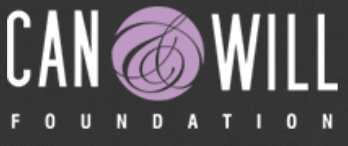
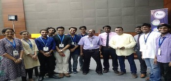

As part of my Bachelors's project.Took an initiative to address the issue of cyberbullying on twitter alongside wokring towards the mission of End Incest Trust.Influenced various stakeholders and was successfull in getting a MoU
signed between VIT University and End Incest Trust

Mentored 1st year Scholar studying towards his own computer science degree using multiple modes of communication. Raised funds for Can & Will Foundation, thereby contributing towards the Rs. 1O lakhs appeal for the academic expenses
of the 22 undergraduate eduCATe Scholars undertaking various professional courses.
Team Coordinator
OWASP STUDENT CHAPTER

We started the 4th Student Chapter in India at Vellore Institute Of Technology, Chennai after IIT Kanpur, Thapar University and Mumbai. The chapter was inaugurated on 21st September by Mr. Rakshit Tandon, Mr. Sathish Ashwin, Mr.
Arul Selvar in presence of ProVC VIT, Dean SCSE and other faculty members of the college. We had an overwhelming response with more than 200 students joining us and showing interest in security.
Member of Data Science Club, Graduate Society of Women Engineers, Girl up club ART club. Attended webinars and gained practical knowledge about tools like machine learning and artificial intelligence in saving lives, saving money,
and solving problems